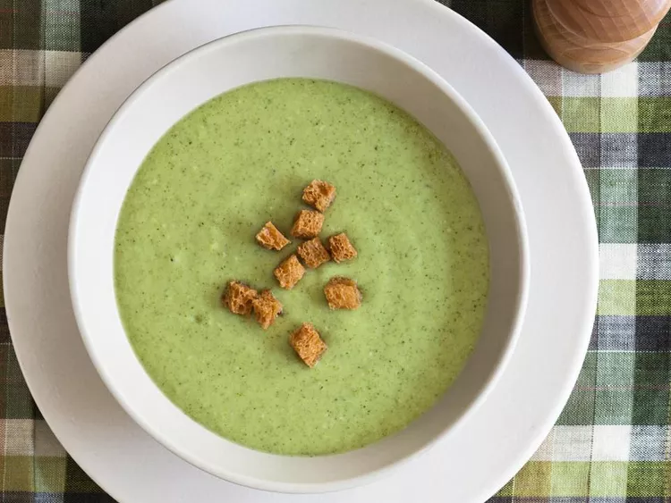

This broccoli soup recipe is thick and flavorful. It is simple, delicious, and quick to make.
Ingredients
5 tablespoons butter, divided
1 onion, chopped
1 stalk celery, chopped
3 cups chicken broth
8 cups broccoli florets
3 tablespoons all-purpose flour
2 cups milk
ground black pepper to taste
Directions
Gather all ingredients.
Melt 2 tablespoons butter in a medium stock pot over medium heat. Saute onion and celery until tender.
Add broccoli and broth, cover, and simmer for 10 minutes.
Pour the soup into a blender, filling the pitcher no more than halfway full. Hold down the lid of the blender with a folded kitchen towel, and carefully start the blender, using a few quick pulses to get the soup moving before leaving it on to puree. Puree in batches until smooth and pour into a clean pot. Alternately, you can use an immersion blender and puree the soup right in the cooking pot.
Melt 3 tablespoons butter in a small saucepan over medium to medium-low heat; stir in flour and add milk. Stir until thick and bubbly, and add to soup. Season with pepper and serve.